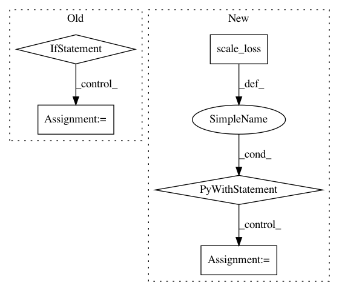

4888cb7a5299f7eed9214ddc70871dc05ea0f4d2,model/ft_ResNet50/train.py,,train_model,#Any#Any#Any#Any#Any#,151
Before Change
else:
inputs, labels = Variable(inputs), Variable(labels)
// if we use low precision, input also need to be fp16
if fp16:
inputs = inputs.half()
// zero the parameter gradients
optimizer.zero_grad()
// forward
if phase == "val":
After Change
// backward + optimize only if in training phase
if phase == "train":
if fp16: // we use optimier to backward loss
with amp.scale_loss(loss, optimizer) as scaled_loss:
scaled_loss.backward()
else:
loss.backward()
optimizer.step()
In pattern: SUPERPATTERN
Frequency: 4
Non-data size: 5
Instances
Project Name: layumi/Person_reID_baseline_pytorch
Commit Name: 4888cb7a5299f7eed9214ddc70871dc05ea0f4d2
Time: 2019-03-20
Author: zdzheng12@gmail.com
File Name: model/ft_ResNet50/train.py
Class Name:
Method Name: train_model
Project Name: catalyst-team/catalyst
Commit Name: aab3902d4a7d55f5a86058854adc36b8a12c873f
Time: 2019-05-20
Author: ekhvedchenya@gmail.com
File Name: catalyst/dl/callbacks/base.py
Class Name: OptimizerCallback
Method Name: on_batch_end
Project Name: layumi/Person_reID_baseline_pytorch
Commit Name: 8d57309574a957dd56e14bd9ed961542d34f1d04
Time: 2019-03-09
Author: zdzheng12@gmail.com
File Name: train.py
Class Name:
Method Name: train_model